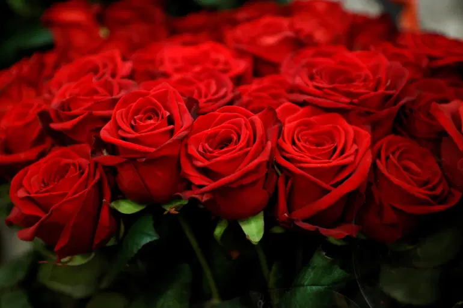

- 장미의 기본정보
- 학명 : Rosa Hybrida
- 계 : 식물
- 문 : 속씨식물
- 강 : 쌍떡잎식물
- 목 : 장미목
- 원산지 : 서아시아
- 분포 지역 : 북반구의 한대, 냉대, 온대, 아열대
- 장미의 역사
- - 고대 이집트, 바빌로니아, 페르시아 등 여러 지역에서 장미가 재배 되었다는 사실이 벽화로 존재함.
- - 장미가 본격적으로 사랑 받기 시작한 것은 로마 시대. 상류 계급의 장식용 으로 주로 사용 되었음.
- - 중세 유럽에서는 그리스도교를 상징하는 꽃으로 중요시함. 따라서 왕가의 문양이 되기도 하였음.
- - 영국의 장미 전쟁이 특히 유명. 왕위를 위해 전쟁을 벌인 두 가문이 각각 흰 장미와 붉은 장미를 달고 전쟁을 했기 때문에 장미 전쟁이라는 이름이 붙여짐.

- 장미의 재배 정보
- - 사계성 장미는 최저온도 18℃ 유지 시 연중 개화함.
- - 우리나라 같은 온대 기후에서는 주로 5월 개화.
- - 장미는 광을 좋아하는 식물. 적적생육온도는 24~27℃ 이며 야간 온도는 15~18℃이다. 30℃ 이상으로 온도가 올라가면 꽃잎 수가 줄어 퇴색하며 5℃ 부근에서는 생육이 정지 된다.

- 장미의 꽃말
- 붉은 장미 - 욕망, 사랑
- 흰 장미 - 존경, 순결
- 노란 장미 - 질투, 불신
- 주황 장미 - 수줍음, 첫사랑, 고백
- 분홍 장미 - 은혜, 기쁨
- 보라 장미 - 영원한 사랑, 불완전한 사랑
- 파란 장미 - 불가능, 이루어질 수 없는 사랑→기적
옛날에는 파란 장미는 만들어질 수 없는 것이라고 여겼기 때문에 꽃말이 불가능이었으나 최근에 와서 과학 기술의 발달로 파란 장미를 만들어내며 기적이라는 꽃말로 바뀌었음. - 검은 장미 - 당신은 영원히 나의 것